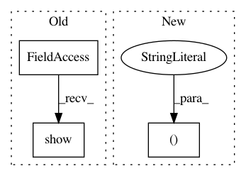

9be131f0e7c77086ab4c3cad7469887bd1d55c89,ilastik/widgets/featureDlg.py,,,#,145
Before Change
ex2.createFeatureTable({"Color": [FeatureEntry("Banananananaana")], "Edge": [FeatureEntry("Mango"), FeatureEntry("Cherry")]}, [0.3, 0.7, 1, 1.6, 3.5, 5.0, 10.0])
ex2.setWindowTitle("ex2")
ex2.setImageToPreView((numpy.random.rand(100,100)*256).astype(numpy.uint8))
ex2.show()
ex2.raise_()
def test():
After Change
//app.setStyle("cleanlooks")
ex = FeatureDlg()
ex.createFeatureTable([("Color", [FeatureEntry("Banananananaana")]), ("Edge", [FeatureEntry("Mango"), FeatureEntry("Cherry")])], [0.3, 0.7, 1, 1.6, 3.5, 5.0, 10.0])
ex.setWindowTitle("FeatureTest")
ex.setImageToPreView(None)
ex.exec_()
In pattern: SUPERPATTERN
Frequency: 4
Non-data size: 3
Instances
Project Name: ilastik/ilastik
Commit Name: 9be131f0e7c77086ab4c3cad7469887bd1d55c89
Time: 2013-05-15
Author: ben-heuer@web.de
File Name: ilastik/widgets/featureDlg.py
Class Name:
Method Name:
Project Name: ilastik/ilastik
Commit Name: 098408171dd0f2fd01cb113df78b23e4b6c89886
Time: 2013-05-03
Author: ben-heuer@web.de
File Name: ilastik/widgets/featureDlg.py
Class Name:
Method Name:
Project Name: interactiveaudiolab/nussl
Commit Name: f4a624c725e8a20a5d295e2f1f1fbbcfb3724249
Time: 2015-08-30
Author: fpishdadian@u.northwestern.edu
File Name: demo_duet_v2.py
Class Name:
Method Name:
Project Name: nipy/dipy
Commit Name: d938f476feee0efd9045bc8f9bb1fe76b9898fae
Time: 2018-01-10
Author: skab12@gmail.com
File Name: doc/examples/simulate_multi_tensor.py
Class Name:
Method Name: